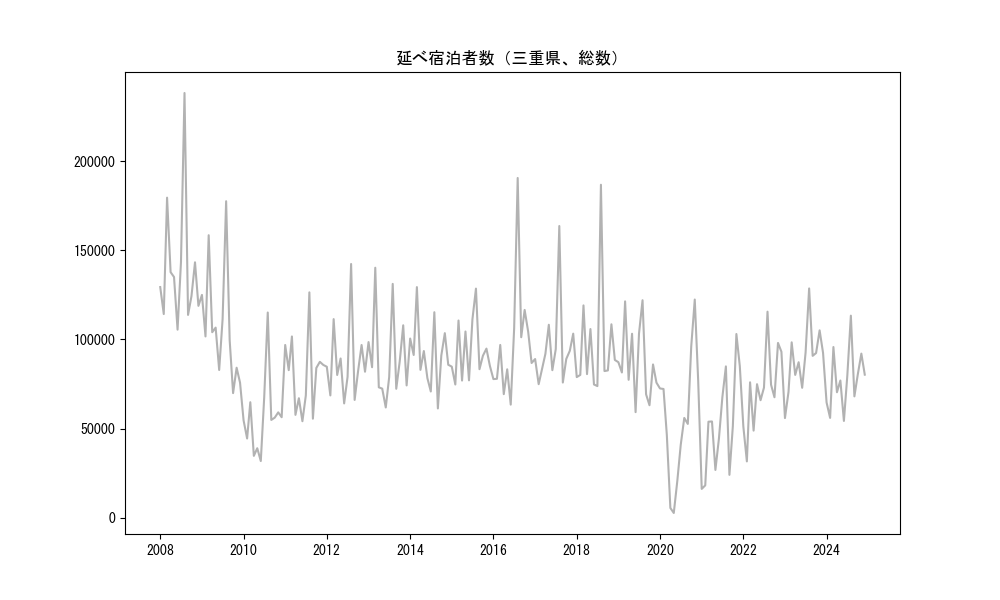
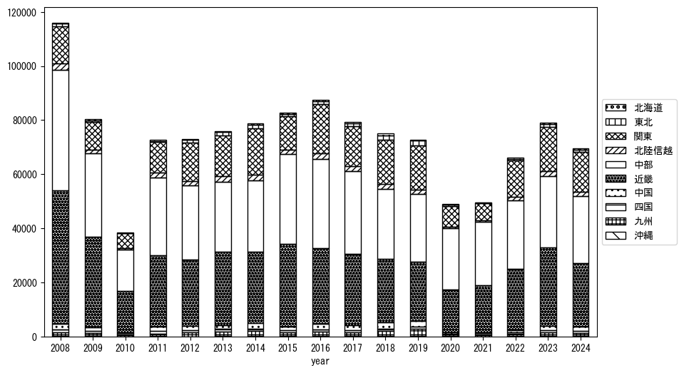
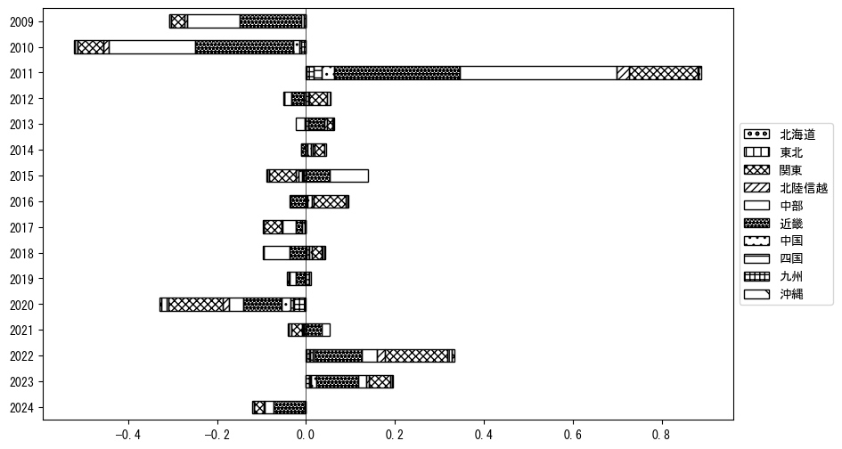
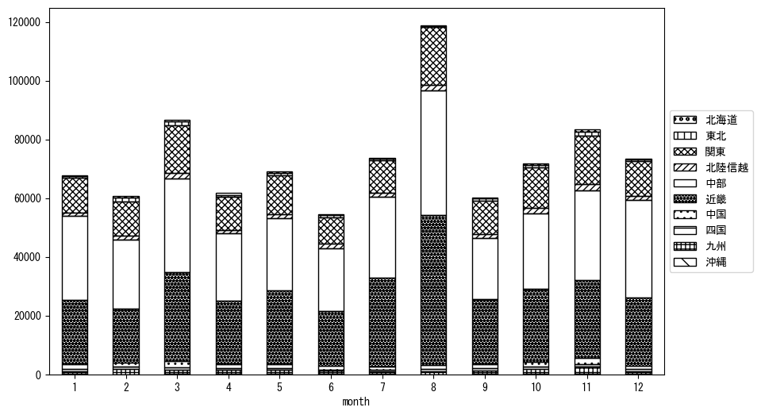
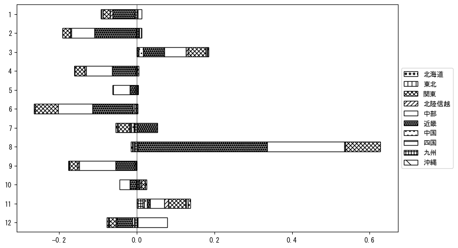

-
トップ
-
三重県
三重県
１．延べ宿泊者（総数）の推移
時系列グラフ

図１：三重県内の従業員数100人以上の宿泊施設での延べ宿泊者数（国外、居住地不詳を含む総数）。
基本統計量
表１：従業員数100人以上の宿泊施設での延べ宿泊者の総数（国外、および居住地不詳を含む）に関する基本統計量。単位は人泊。平均は１か月あたりの平均値を表す。図１に対応。
| 2008年 |
140,254 |
36,420 |
105,499 (6月) |
238,134 (8月) |
| 2009年 |
108,093 |
32,308 |
69,938 (10月) |
177,485 (8月) |
| 2010年 |
56,595 |
21,678 |
31,879 (6月) |
115,111 (8月) |
| 2011年 |
80,700 |
21,468 |
54,192 (6月) |
126,411 (8月) |
| 2012年 |
87,239 |
21,778 |
64,165 (6月) |
142,309 (8月) |
| 2013年 |
90,239 |
24,694 |
61,902 (6月) |
140,209 (3月) |
| 2014年 |
91,983 |
18,683 |
61,342 (9月) |
129,351 (3月) |
| 2015年 |
93,573 |
16,799 |
74,770 (2月) |
128,518 (8月) |
| 2016年 |
97,878 |
33,283 |
63,485 (6月) |
190,511 (8月) |
| 2017年 |
95,836 |
23,515 |
74,937 (2月) |
163,589 (8月) |
| 2018年 |
96,827 |
31,837 |
73,884 (7月) |
186,710 (8月) |
| 2019年 |
87,462 |
20,963 |
59,270 (6月) |
121,998 (8月) |
| 2020年 |
55,446 |
35,580 |
2,751 (5月) |
122,379 (11月) |
| 2021年 |
52,514 |
28,468 |
16,259 (1月) |
103,065 (11月) |
| 2022年 |
72,566 |
22,764 |
31,663 (2月) |
115,582 (8月) |
| 2023年 |
88,949 |
18,417 |
55,949 (1月) |
128,606 (8月) |
| 2024年 |
77,703 |
16,928 |
54,342 (6月) |
113,353 (8月) |
２．宿泊者数の重心（年平均の推移）
図２：三重県内の従業員数100人以上の宿泊施設での延べ宿泊者数（国外、居住地不詳を除く）の重心（年平均の推移）。
全画面表示
重心の前年平均からの移動距離と方位、および緯度・経度
表２：重心の前年平均からの移動距離と方位、および緯度・経度。図２に対応。
| 2008年 |
— |
— |
35.0471 |
136.5166 |
| 2009年 |
南東 |
1.3km |
35.0399 |
136.5275 |
| 2010年 |
東 |
10.7km |
35.0541 |
136.6438 |
| 2011年 |
西北西 |
2.7km |
35.0593 |
136.6144 |
| 2012年 |
東北東 |
16.1km |
35.1152 |
136.7770 |
| 2013年 |
北 |
2.9km |
35.1410 |
136.7823 |
| 2014年 |
東北東 |
5.4km |
35.1681 |
136.8317 |
| 2015年 |
西南西 |
19.1km |
35.0841 |
136.6492 |
| 2016年 |
東北東 |
20.6km |
35.1557 |
136.8576 |
| 2017年 |
西南西 |
7.3km |
35.1419 |
136.7793 |
| 2018年 |
北東 |
7.7km |
35.1947 |
136.8343 |
| 2019年 |
南西 |
3.4km |
35.1697 |
136.8121 |
| 2020年 |
南西 |
16.7km |
35.0524 |
136.6971 |
| 2021年 |
西南西 |
6.3km |
35.0256 |
136.6363 |
| 2022年 |
東北東 |
23.8km |
35.1415 |
136.8561 |
| 2023年 |
西北西 |
4.2km |
35.1599 |
136.8156 |
| 2024年 |
東 |
3.8km |
35.1601 |
136.8577 |
運輸局別延べ宿泊者数
時系列（年平均）

図３：三重県内の従業員数100人以上の宿泊施設での１か月あたり平均延べ宿泊者数（国外、居住地不詳を除く）の運輸局別内訳。
寄与度（前年からの変化率に対する）

図４：三重県内の従業員数100人以上の宿泊施設での運輸局別延べ宿泊者数（国外、居住地不詳を除く）から求めた寄与度。
３．宿泊者数の重心（月別）
図５：三重県内の従業員数100人以上の宿泊施設での延べ宿泊者数（国外、居住地不詳を除く）の重心（月別）。観測期間は2008年1月から2024年12月まで。
全画面表示
全期間（2008年1月～2024年12月）の平均と月別平均の比較
表３：全期間の平均から月別平均までの移動距離と方位、および緯度・経度。図５に対応。
| 全期間 |
— |
— |
35.1124 |
136.7346 |
| 1月 |
東南東 |
2.5km |
35.1042 |
136.7596 |
| 2月 |
北東 |
9.3km |
35.1708 |
136.8083 |
| 3月 |
北東 |
7.4km |
35.1574 |
136.7943 |
| 4月 |
北 |
3.5km |
35.1436 |
136.7322 |
| 5月 |
南南東 |
1.0km |
35.1049 |
136.7406 |
| 6月 |
北西 |
3.1km |
35.1280 |
136.7065 |
| 7月 |
西南西 |
12.8km |
35.0493 |
136.6168 |
| 8月 |
南西 |
9.4km |
35.0418 |
136.6768 |
| 9月 |
南西 |
2.0km |
35.0993 |
136.7190 |
| 10月 |
北 |
2.3km |
35.1335 |
136.7343 |
| 11月 |
北東 |
5.5km |
35.1533 |
136.7694 |
| 12月 |
南南東 |
5.9km |
35.0624 |
136.7579 |
運輸局別延べ宿泊者数
月別平均（2008年1月～2024年12月）

図６：三重県内の従業員数100人以上の宿泊施設での延べ宿泊者数（国外、居住地不詳を除く）の運輸局別内訳（月別）。
寄与度（全期間の平均から月別平均への変化率に対する）

図７：三重県内の従業員数100人以上の宿泊施設での運輸局別延べ宿泊者数（国外、居住地不詳を除く）から求めた寄与度（月別）。
４．データのダウンロード
出典：観光庁「宿泊旅行統計調査」に収録された「施設所在地、居住地別延べ宿泊者数（従業員数100人以上の施設）」
国土地理院「白地図（地理院タイル）」（図２と図５）